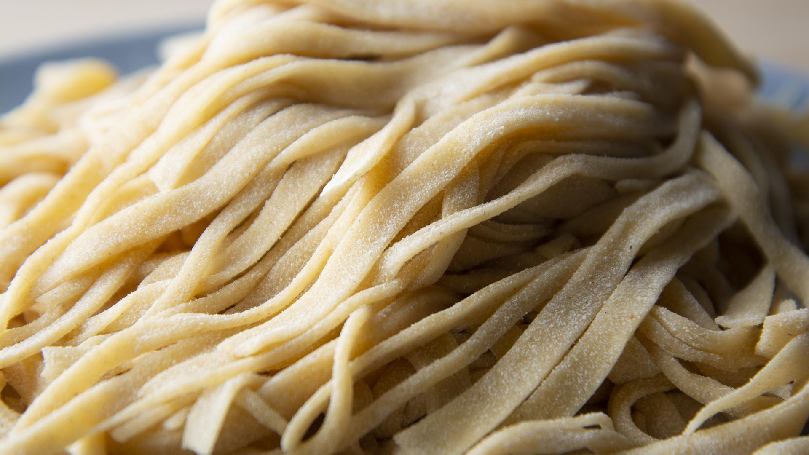
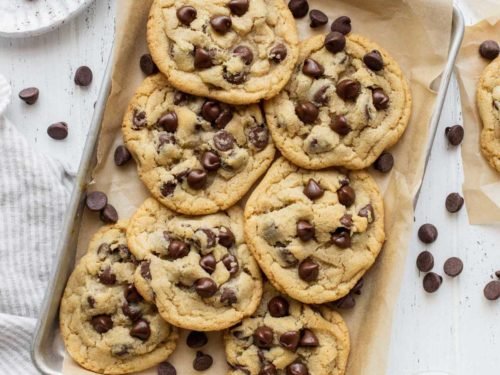
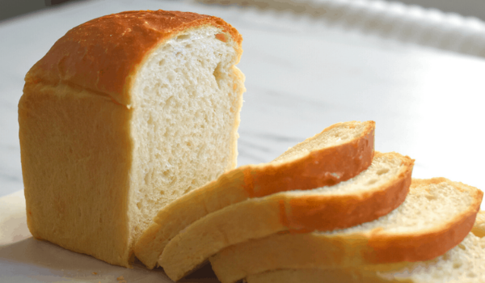

HOMEMADE BREAD
This easy white bread recipe bakes up deliciously golden brown. There's nothing like the homemade aroma wafting through the kitchen as it bakes.
Ingredients
- Flour
- Yeast
- Sugar
- Salt
- Oil
- Water

HOMEMADE PASTA
This 4-ingredient homemade pasta recipe— easy to make by hand, in a stand mixer, or in a food processor. Plus tips on how to roll out your pasta by hand or using a pasta maker.
Ingredients
- Flour
- Eggs
- Olive Oil
- Salt
Click here for the full recipe.

HOMEMADE COOKIES
With a texture that is slightly crispy on the outside and chewy on the inside, it’s a favorite chocolate chip cookie recipe that’s been top-rated by hundreds of satisfied home cooks.
Ingredients
- Flour
- Brown Sugar
- White Sugar
- Butter
- Eggs
- Chocolate Chips
- Vanilla
- Baking Soda
- Salt
Click here for the full recipe.